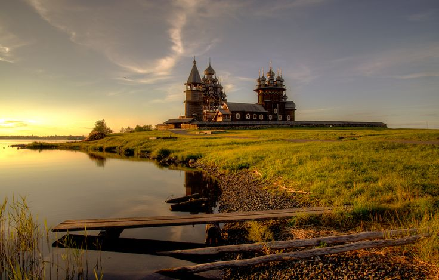
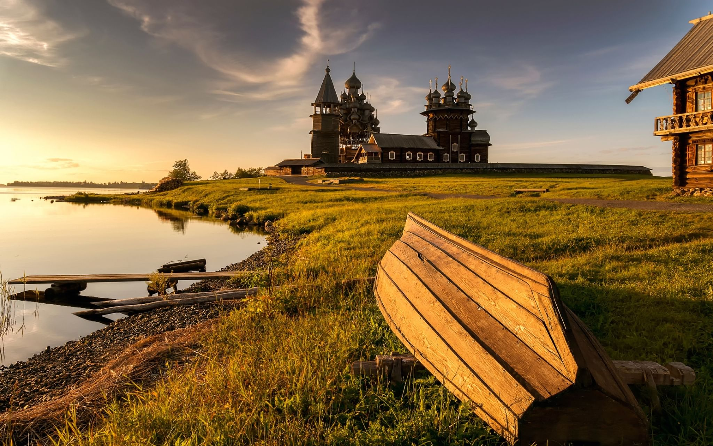
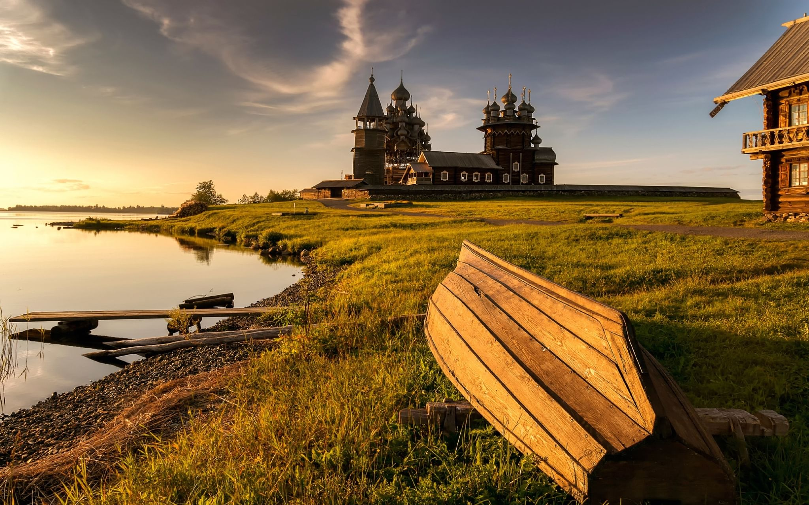

Жемчужины Селигера
Полное описание маршрута:
Волоколамск - Ржев - Селижарово - Оковецкий источник - Ширково - Исток Волги - Осташков - Нило-Столобенская пустынь
1 день:
Отправление в Волоколамск в 7:30
Сбор в 7:15 около метро "Строгино"
Посещение Волокаламского кремля
Волоколамский кремль, который когда-то был неприступной крепостью, а сегодня состоит из двух красивых храмов на древних земляных валах : Воскресенский собор с многоярусной 75-метровой колокольней, построенный в XV веке при князе Борисе Волоцком, Никольский собор, возведённый в 1862 году в декоративном псевдорусском стиле.


Отправление в Ржев
Во время обзорной экскурсии по Ржеву вы насладитесь пейзажами Волги и изумрудного города на её берегах, услышите легенды и мифы о происхождении названия Ржева, узнаете о Великой Отечественной войне и подвиге местных жителей.
Посещение грандиозного Ржевского Мемориала Памяти
Это один из крупнейших "народных" памятников в России! Высота грандиозного монумента 25 метров, а площадь Мемориала является одной из крупнейших в Европе и подобна площади берлинского мемориала Трептов-парк. Вы полюбуетесь могучей фигурой русского Воина, которую словно несёт на крыльях памяти стая журавлей...
Отправление в Cелижарово
Когда-то в этом уединённом месте, на стрелке рек, трудолюбивые монахи руками насыпали высокий остров и возвели великолепный Троицкий Селижаров монастырь, который посещал сам Иоанн Грозный, Борис Годунов и другие московские государи.
Обед
Посещение чудотворного Оковецкого источника
Затерянный в летописных оковецких лесах Оковецкий святой источник - скит легендарной Ниловой пустыни и настоящее природное и Божие чудо! История источника связана с необъяснимым явлением двух чудотворных икон Оковецкой Божией Матери, которые одинаково почитаются и старообрядцами и прихожанами православной Церкви.
Переезд в Осташков
Размещение. Ужин (за доп. плату)
2 день:
Завтрак
Отправление в Волговерховье к истоку Волги
Здесь из нескольких родничков, объединённых в один небольшой водоём, который можно просто перешагнуть, рождается природное чудо нашей страны - могучая и полноводная река Волга. Недаром над местом рождения реки стоит небольшая часовня, которую в народе называют "волжская избушка" - это один из самых символичных и святых уголков России, рождающий самые чистые мысли, высокие чувства и незабываемые воспоминания…
Отправление на Ширков погост, в "Селигерские Кижи"
На красивейшем мысу, разделяющем два верхневолжских озера Стерж и Вселуг, в местечке Ширков Погост, находится архитектурное диво - потрясающая деревянная церковь, которую в народе называют "Селигерскими Кижами". Деревянная церковь Ширкова Погоста не имеет аналогов на территории России! История поражающего храма началась в незапамятные времена, когда купцы шли из Новгорода в Москву и несли с собой две иконы Иоанна Предтечи. Расположившись на отдых на красивом берегу, они поставили образа на землю, и когда собрались отправиться дальше, не смогли поднять их! В честь удивительного события братья Ширковы возвели церковь Рождества Иоанна Предтечи, которая до сих пор вызывает изумление даже у архитекторов.
 

Отправление в Осташков на обед
Посещение островной Нило-Столобенской пустыни
В 1528 году на пустынный берег острова Столбный, пришёл удивительный святой человек. Монах-отшельник Нил Столобный прославился своими чудесными видениями, благими делами и великим постничеством. По завещанию Нила Столобенского, после смерти на месте аскетической землянки преподобного был возведён величественный монастырь. Это целый город на острове, который местные жители сравнивают с Санкт-Петербургом, здесь находится пять великолепных церквей, несколько десятков каменных монастырских строений и даже гранитная набережная!
Отправление в Москву
Стоимость на одного человека
| Категория | Стоимость |
|---|---|
| Двухместный номер | 15 000р |
| Доплата за одноместный номер | 2 000р |
| Доплата за ужин | 600р |
| Скидка на доп.место | 200р |
| Скидка на ребенка | 200р |